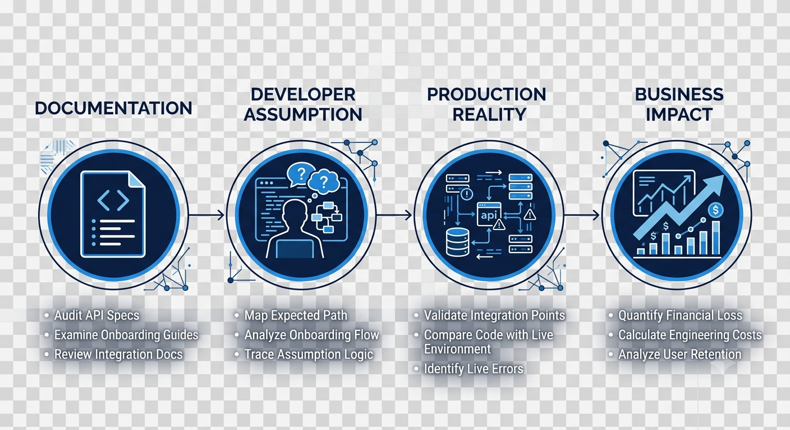
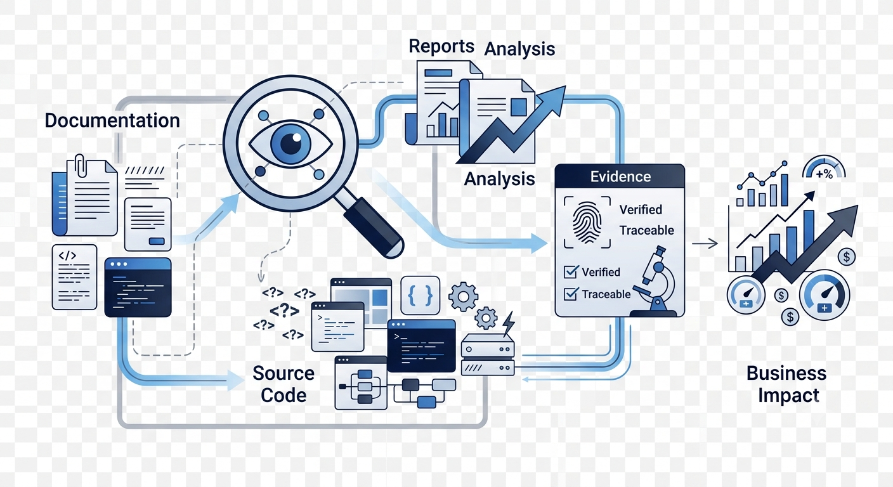

Developer Onboarding Audit
Identify documentation-induced assumptions before developers discover them during implementation.
Independent Developer Onboarding Research
DaxMac researches documentation-induced onboarding assumptions that quietly become production failures in API-first products.
Independent Research • Evidence-Based Findings • Production-First Analysis
Identify documentation-induced assumptions before developers discover them during implementation.
Evaluate onboarding documentation for production readiness, operational clarity, and hidden architectural assumptions.
Independent evidence-based reports explaining where developer onboarding breaks in real implementation.
Environment selection appears to be ordinary configuration but actually creates an irreversible architectural boundary.
Read Full Audit →Application creation establishes an operational boundary, but onboarding presents it as simple organization.
Read Full Audit →
Every audit follows the same production-first process.

DaxMac is an independent developer onboarding consultancy focused on API-first companies. We research documentation-induced assumptions before they become production failures and publish evidence-based findings that help engineering teams reduce implementation risk.
Interested in a developer onboarding audit or research collaboration?